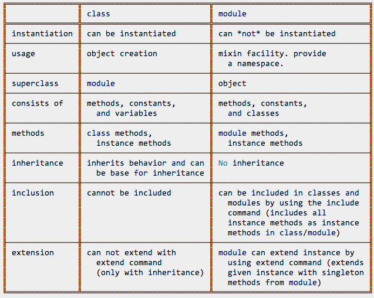

Triangles are my favorite shape. Three points where two lines meet.
Toe to toe, back to back, let's go, my love, it's very late.
CLASSES VS MODULES
We've yet to really cover modules in bootcamp in any great detail at the time of writing this post. From what I've researched, classes and modules are two totally different things in Ruby, although they have similarities which means that one can easily mistake their use and implementation when programming. Here's a hard and fast break-down on the key differences between classes and modules. Happy readin all!
MODULES and CLASSES. KEY DIFFERENCES 101
- Modules are a collection of methods and constants. The methods in a module may be instance methods or module methods. Instance methods appear as methods in a class when the module is included, module methods do not. Conversely, module methods may be called without creating an encapsulating object, while instance methods may not.
- Modules further defined. Modules are a construct that serve as a container. The container can be used for name-spacing, including different data, or augmenting your existing classes with different behaviour.
- I'm confused. How does this compare to a class? Well, modules provide methods that are used across multiple classes - think about them as "libraries" of methods. So whereas a class has methods which can be used across "instances of its own class", a module goes one step beyond by providing methods which can be used across a wide number of classes.
- Leading on. Instantiated. Modules simply cannot be instantiated.This is a key difference to classes, where classes are absolutely 100% instantiated enabling class variables to be accessed across class methods.
- Modules containing classes - namespacing Namespacing is what happens when you put classes inside of your modules. Namespacing is useful for separating different parts of your programme.
- But classes can include Modules too = proxy superclass! When a class includes a module, a proxy superclass is generated that provides access to all the module methods as well as the class methods.
- Module and class pecking order In Ruby's object hierarchy, the class object actually inherits from the module object. This is just another way of rephrasing point number 2.
- Objects vs functions Classes are about objects. They contain a set of instances of the class, or object, with methods that define the behaviour of said object. Modules are not about objects, they are about functions that can be used across all classes.
- Inheritance In the case of classes, set methods inherit behaviours from the main class or object and instances of the class. In the instance of methods, there is no inheritance or streamlining of behaviours across classes.
- Please find below a lovely table that summarises my above points: 